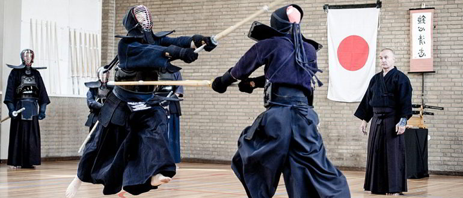

Кэндо - современное боевое искусство японского фехтования на бамбуковых мечах. Ведёт свою историю от традиционных самурайских техник владения мечом, кэндзюцу. Ставит целью формирование полноценной личности и твёрдого характера, закаляя волю и тело фехтовальщика. В современной Японии рассматривается как один из видов спорта. Существует движение за включение кэндо в программу Олимпийских игр.

История возникновения кэндо.
Зародилось кендо в Х-ХI вв. в Японии и изначально называлось кэндзюцу, что означает «техника меча».Особое значение искусство владения мечом приобрело в 12 веке, т. к. усилилось влияние военной аристократии и как следствие зародился культ оружия и людей, которые могли в совершенстве владеть техникой фехтования. И уже к 18 веку на территории Японии действовало около 200 школ кендзюцу. Однако в результате модернизации Японии по аналогии с западными державами и установления всеобщего равенства перед законом древний класс самураев было решено упразднить. И искусство меча начало приходить в упадок. Но уже через 20 лет европеизацию Японии начали ставить под сомнение и объявили новую политику национального благополучия и военной мощи. И это вновь привлекло внимание к кендо как способу воспитания подрастающего поколения. Во второй половине 18 века были введены бамбуковые тренировочные мечи и защитное снаряжение, которые сделали возможным тренироваться без кровопролития, и кендо стало стремительно развиваться и очень высоко цениться как один из столпов националистического воспитания. В 19 веке кендо вводится в курс подготовки Токийской полиции, а в начале 20-го века включено в программу физического воспитания в общеобразовательных школах. Но в 1945 году после поражения Японии во Второй Мировой кендо запретили за связь с милитаризмом. После окончания периода оккупации кендо вернулось в жизнь японцев. Была образована Всеяпонская Федерация Кендо, и кендо было провозглашено не воинским искусством, а воспитательным видом спорта. Во всем мире этот вид боевых искусств из года в год набирает все большую популярность и Россия не является исключением. Ежегодно проводятся чемпионаты Мира и Европы, в которых российские спортсмены также принимают участие.
Экипировка кэндо.
Техника кэндо.
Меч («синай») состоит из 4х связанных полос бамбука или его синтетического заменителя. Длина – около 115 см - зависит также от роста и предпочтений бойца. Держится меч двумя руками - левой сильнее, а правая используется для точности удара. Удары делятся на колющие и рубящие. Рубящие - по голове (кроме лица), туловищу и запястьям противника. Колющие – строго в горло (их преподают только опытным бойцам).